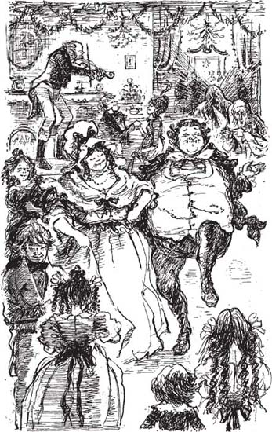

7
Listen to Part 1:

Giáng sinh với Nhà Fezziwig
Scrooge và Hồn ma Quá khứ Giáng sinh đi bộ qua những con phố đông đúc của thành phố. Hồn ma dừng lại trước cửa một tòa nhà lớn.
Nó hỏi: "Ông có nhớ nơi này không?".
Scrooge đáp: "Có, tất nhiên là tôi nhớ. Tôi đã làm việc ở đây sau khi rời khỏi trường học".
Họ bước vào tòa nhà và thấy một cụ già đang ngồi trong văn phòng. Ông ấy ngồi trên một chiếc ghế rất cao và đang viết những con số trong cuốn sổ kế toán lớn.
Scrooge reo lên: "Là ông Fezziwig già!". "Ông Fezziwig già tốt bụng!".
Khi Scrooge nói, cụ già đặt bút xuống. Ông liếc nhìn đồng hồ. Bảy giờ rồi. Fezziwig mỉm cười, rồi bật cười. Ông vỗ tay. Ông là một cụ già rất vui vẻ.
Fezziwig gọi: "Ebenezer! Dick!".
Hai chàng thanh niên chạy vào văn phòng. Và Scrooge thấy mình khi còn là một chàng trai trẻ.
Scrooge nói với hồn ma: "Nhìn này. Đó là Dick Wilkins cùng tôi. Anh ấy thích tôi. Anh ấy là một người bạn tốt".
Listen to Part 2:
Fezziwig nói: "Các cậu không phải làm việc nữa đêm nay".
Fezziwig lại vỗ tay và nhảy xuống khỏi chiếc ghế cao.
Ông nói: "Các cậu, dọn dẹp bàn ghế đi. Đổ thêm than vào lò sưởi. Làm cho căn phòng sáng sủa và vui vẻ lên!".
Một lát sau, một người đàn ông đến. Ông ta mang theo một cây vĩ cầm. Bà Fezziwig đến. Bà mỉm cười và vui vẻ giống như chồng mình. Sau đó đến ba cô con gái của ông bà Fezziwig. Họ cũng mỉm cười và vui vẻ. Rồi đến sáu chàng trai trẻ đang yêu các cô con gái. Và những người hầu của nhà Fezziwig cùng một chàng trai trẻ sống ở bên kia đường cũng đến. Người nhạc sĩ bắt đầu chơi vĩ cầm và tiệc bắt đầu.
Những người trẻ tuổi nhảy múa. Họ chơi trò chơi và ăn rất nhiều đồ ăn. Ông bà Fezziwig già nhảy múa và cười rất vui!
Đến mười một giờ, tiệc kết thúc. Ông bà Fezziwig đứng cạnh cửa. Họ bắt tay từng người khi họ ra về. Mọi người đều nói: "Giáng sinh vui vẻ!". "Giáng sinh vui vẻ!".
Cuối cùng, tất cả mọi người đều đã ra về, chỉ còn Ebenezer và Dick. Họ sống với ông bà Fezziwig. Hai cụ già đó bắt tay họ. Sau đó, Ebenezer và Dick đi ngủ. Cả hai đều ngủ trên những chiếc giường trong văn phòng.
Trong khi xem bữa tiệc, Scrooge già đã quên mất hồn ma. Đột nhiên, ông thấy hồn ma lại nhìn mình. Ánh sáng phát ra từ đầu nó rất chói.
Hồn ma nói: "Thật dễ dàng để làm cho mọi người vui vẻ, phải không?". "Lắng nghe này".
Scrooge lắng nghe Dick và Ebenezer nói chuyện.
Listen to Part 3:
Những chàng trai trẻ nói: "Ông bà Fezziwig thật tốt bụng và nhân hậu. Họ đối xử với chúng tôi rất tốt".
Hồn ma tiếp tục: "Fezziwig không tiêu nhiều tiền". "Vậy tại sao mọi người lại thích ông ấy đến vậy?".

Những người trẻ tuổi nhảy múa. Họ chơi trò chơi và ăn rất nhiều đồ ăn. Ông bà Fezziwig già nhảy múa và cười rất vui!
Scrooge trả lời: "Tiền bạc không quan trọng". "Chúng tôi làm việc cho ông ấy và ông ấy có thể làm cho chúng tôi vui vẻ hoặc buồn bã. Ông ấy có thể làm cho công việc của chúng tôi trở nên khó khăn hoặc dễ dàng. Niềm vui mà ông ấy mang lại cho chúng tôi mới quan trọng, chứ không phải số tiền mà ông ấy tiêu".
Hồn ma Quá khứ Giáng sinh nhìn kỹ Scrooge và đột nhiên Scrooge ngừng nói.
Hồn ma hỏi: "Ông đang nghĩ gì vậy?".
Scrooge đáp: "Ồ, không có gì cả". "Tôi đã... tôi đã ước mình có thể nói vài lời với Bob Cratchit".
Hồn ma lặng lẽ một lúc. Sau đó, nó nói: "Tôi không còn nhiều thời gian nữa".
Mục lục
- Trang tựa
- Mục lục
- Ghi chú về tác giả
- Ghi chú về cuộc sống tại Anh vào thế kỷ XIX
- 1 Ebenezer Scrooge
- 2 Những vị khách thăm viếng Scrooge
- 3 Bóng ma Marley
- 4 Tin tức cho Scrooge
- 5 Bóng ma quá khứ
- 6 Scrooge thời thơ ấu
- 7 Lễ Giáng sinh với nhà Fezziwig
- 8 Người con gái yêu Scrooge
- 9 Bóng ma hiện tại
- 10 Lễ Giáng sinh với gia đình Cratchit
- 11 Giáng sinh vui vẻ khắp nơi
- 12 Bóng ma tương lai
- 13 Tiny Tim
- 14 Người đàn ông đã thay đổi
- Điểm nhấn để hiểu
- Trang bản quyền